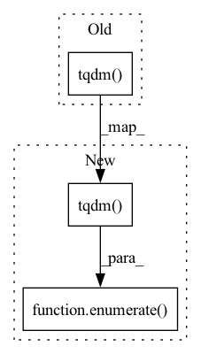

Pattern ID :2498

Before Change
model.train()
for batch in tqdm.tqdm(
loader_train, desc="Train loop", leave=False, ncols=100
):
success_pred, length_pred, auc_pred = model(
grasp_pose=batch["grasp_pose"].float().cuda(),
initial_pose=batch["initial_pose"].float().cuda(),
After Change
model.train()
for iteration, batch in enumerate(
tqdm.tqdm(
loader_train, desc="Train loop", leave=False, ncols=100
)
):
success_pred, length_pred, auc_pred = model(
object_classes=batch["object_classes"].float().cuda(),
object_poses=batch["object_poses"].float().cuda(),
In pattern: SUPERPATTERN
Frequency: 4
Non-data size: 3
Instances
Fragment ID: 10476953
Project Name: wkentaro/reorientbot
Commit Name: 3bee6a610ea0f0c743fcc60fe87ed7b499738d48
Time: 2021-05-28
Author: www.kentaro.wada@gmail.com
File Name: examples/reorient/train.py
M Class Name: AnonimousClass
N Class Name: AnonimousClass
M Method Name: main(0)
N Method Name: main(0)
M Parent Class:
N Parent Class:
M File Name: examples/reorient/train.py
N File Name: examples/reorient/train.py
M Start Line: 94
M End Line: 182
N Start Line: 152
N End Line: 273
'>
Before Change
@staticmethod
def build_amplitude(image_list, amplitude_dir):
// extract amplitudes from target domain
for i, image_name in tqdm.tqdm(enumerate(image_list)):
image = Image.open(image_name).convert("RGB")
image = np.asarray(image, np.float32)
image = image.transpose((2, 0, 1))
After Change
@staticmethod
def build_amplitude(image_list, amplitude_dir):
// extract amplitudes from target domain
for i, image_name in enumerate(tqdm.tqdm(image_list)):
image = Image.open(image_name).convert("RGB")
image = np.asarray(image, np.float32)
image = image.transpose((2, 0, 1))
'>
Fragment ID: 10476951
Project Name: thuml/transfer-learning-library
Commit Name: b23944c9c0af796efabd737c4c6cd5b8df33897c
Time: 2021-02-28
Author: 13126830206@163.com
File Name: dalib/translation/fourier_transform.py
M Class Name: FourierTransform
N Class Name: FourierTransform
M Method Name: build_amplitude(2)
N Method Name: build_amplitude(2)
M Parent Class: nn.Module
N Parent Class: nn.Module
M File Name: dalib/translation/fourier_transform.py
N File Name: dalib/translation/fourier_transform.py
M Start Line: 125
M End Line: 125
N Start Line: 125
N End Line: 125
'>
Before Change
data_iter = (
enumerate(data_loader)
if not show_progress
else auto.tqdm(enumerate(data_loader), desc=desc, total=progress_steps)
)
results = ModuleRunResults() if track_results else None
previous_steps = (counter if counter > -1 else 0) * counter_len
first_batch_size = None
After Change
data_iter = (
enumerate(data_loader)
if not show_progress
else enumerate(auto.tqdm(data_loader, desc=desc, total=progress_steps))
)
results = ModuleRunResults() if track_results else None
previous_steps = (counter if counter > -1 else 0) * counter_len
first_batch_size = None
'>
Fragment ID: 10476948
Project Name: neuralmagic/sparseml
Commit Name: 43b0e6cd31f15effc8b87a6980bba7becd2729b5
Time: 2021-04-06
Author: eldar.ciki@gmail.com
File Name: src/sparseml/pytorch/utils/module.py
M Class Name: ModuleRunner
N Class Name: ModuleRunner
M Method Name: run(7)
N Method Name: run(7)
M Parent Class: ABC
N Parent Class: ABC
M File Name: src/sparseml/pytorch/utils/module.py
N File Name: src/sparseml/pytorch/utils/module.py
M Start Line: 688
M End Line: 688
N Start Line: 688
N End Line: 688